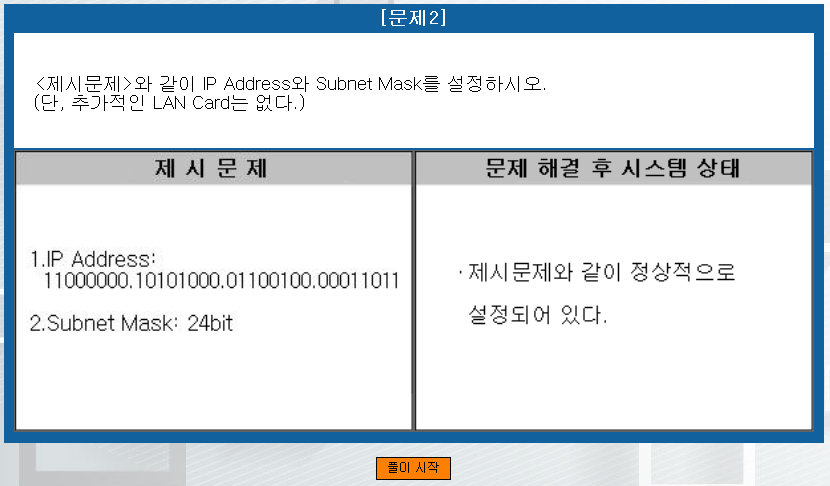

랜 케이블링 문제(실습)는 구글링을 하면 자세한 설명과 영상이 나와있습니다!
1번.

풀이 시작을 누르게 되면 '로컬 영역 연결 속성'이 나타납니다.
위의 IP Address 형식을 보게되면 8비트.8비트.8비트.8비트 로 총 32비트의 형식을 가지므로 IPv4 형식이란 것을 알 수 있습니다.
위와 같이 binary 형식을 10진법으로 표시하면
(128+64).(128+32+8).(64+32+4).(16+8+2+1) = 192.168.100.27 로 표시됩니다.
그리고 서브넷 마스트는 24bit 로 1이 앞에서부터 24개 있다고 생각하시면 됩니다.
11111111.11111111.11111111.00000000 = 255.255.255.0
이렇게 계산이 끝나면

IPv4 프로토콜을 더블클릭하여 속성을 열어줍니다.

추가적인 설정을 하라는 지시가 없었으므로 위와 같이 적고 확인 후, 설정을 확인하면 문제 풀이가 종료됩니다.
2번.

풀이시작을 누르면 아래와 같은 화면이 출력되죠.

위 화면은 IIS(Internet
Information Services) 관리자 서비스 실행 화면입니다.
2번문제의 경우, 제시문제와 같이 웹서버를 추가 설정 하라고 했으니
웹 서버를 추가 해보도록 하겠습니다.

왼쪽 view의 '사이트'라는 항목에서 오른쪽마우스로 클릭 후,
'웹 사이트 추가...' 항목을 클릭 해줍니다.

제시문제대로 입력해줍니다.

추가가 되었습니다.
이제 허용 규칙을 지정해 보겠습니다.
왼쪽 view에서 'ICQA'를 클릭하게 되면 다양한 서비스가 오른쪽 view에 나타나게 됩니다. 거기서 IIS 탭에 'IP 주소 및 도메인 제한'을 실행합니다.

빈 화면에서 오른쪽 마우스를 클릭하고. '허용 항목 추가'를 선택하여 클릭합니다.
우리는 211.111.100.0 ~ 211.11.100.255 까지의 IP Address 를 접속허용 하도록 설정해야 합니다.

위와 같이 마지막비트에 0을 주고 서브넷 마스크 또한 마지막에 0을 주게되면
211.111.100.xxx 형식의 ip는 모두 접속이 가능하게 됩니다.
그리고 확인을 눌러줍니다!
그리고 닫기를 눌러주면 아래처럼 경고 메시지가 뜹니다.

'예'를 누르시고 문제에서 나가주시면 됩니다.
3번.

문제에 답이 나와있습니다!
풀이시작을 눌러줍시다. 한번쯤은 봤을 법한 'services.msc' 실행 모습입니다.
win + r : 'services.msc'를 입력해주면 똑같은 화면이 출력됩니다.
시작프로그램들을 관리할 수 있는데, 잘못건드리면 원활한 시스템 운용에 피해가 발생할 수 있으니 중지할 프로그램, 수동으로 제어할 프로그램 등 사용자가 원하는 대로 설정하기 전에! 검색으로 해당
서비스의 역할을 다시 한 번 찾아보시는 것을 추천드립니다.
다시 문제로 돌아와, 제시문제를 보면 "인터넷 정보 서비스 관리자를 사용하여..."라고 적여있는 게 보이실 겁니다. 설명항목을 오름차순으로 정렬 후, 'ㅇ'에 해당하는 위치로
스크롤을 내려줍니다.(참고로 더 길게보고싶은 탭 경계에서 더블클릭을 하게되면 해당 컬럼의 최대 길이를 갖는 속성값에 맞춰 길이가 늘어납니다.)

**저 경계 사이에서 마우스 커서가 '<->' 모습을 보일 때, 더블클릭
해당 속성값을 찾아 서비스 이름을 보면 "World Wide Web Publishing Service"를 찾을 수 있습니다.

제시문제대로
-
현재 시스템에서 "중지"

-
시작유형에서 "사용 안함"


이렇게 설정해주시면 됩니다.(확인 후 종료)
4번.

풀이시작을 누르겠습니다.

위와 같은 화면이 출력됩니다.
제시문제에서 봤던 것처럼 당연히 IPv4 형식이므로, 왼쪽 view에서 'IPv4'에
오른쪽 마우스를 올리고 '새 범위'를 클릭해줍니다.

IPv4 : 000.000.000.000 으로 각 자리는 십진수 정수로 32비트(4바이트)의 길이입니다.
IPv6 : XXXX:XXXX:XXXX:XXXX:XXXX:XXXX:XXXX:XXXX 으로 각 자리는 16진수로 문자도 존재합니다.(10~15 까지 A~F 로 표시) 128비트(16바이트)의 길이로
기본 구조는 네트워크 번호용 64비트, 호스트 번호용 64비트입니다.

'다음'을 클릭해줍니다.

제시된대로 이름과 설명을 입력한 후, '다음'을 클릭합니다.

입력하라는 값만 입력 후, '다음'을 클릭해줍니다.
(길이에 따라 서브넷마스크 값이 변화합니다)

제외 주소의 범위를 입력 후 '추가'를 클릭합니다.

위와 같이 추가가 됩니다. 다시 '다음'버튼을 클릭해줍니다.

제시된 문제대로 임대 기간을 '6시간'으로 설정하고 '다음'을 클릭합니다.

radio 버튼에서 '아니오,나중에 구성하겠습니다'을 체크하고 다음으로 가면

새 범위 마법사가 끝나게 됩니다.
위 제시문제 외로 추가설정사항이 나온다면

왼쪽 view 에서 부가설정을 진행할 수 있습니다.
그리고 마지막으로 설정이 다 끝난 후, 우리가 등록한 범위를 오른쪽 마우스로 클릭 후,

"활성화"를 꼭 눌러줍니다!
그리고 문제를 종료합니다.
5번.

업데이트중/190315